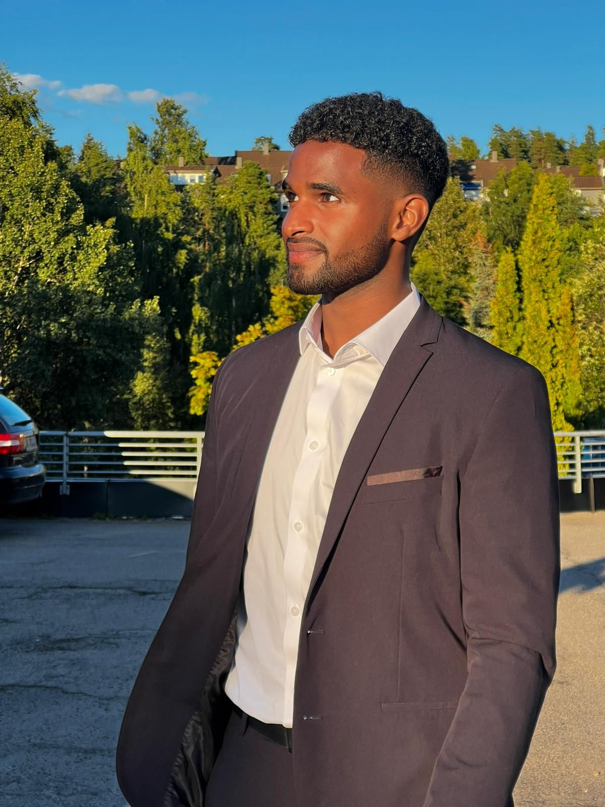

ilyas Abshir Ali
1 juni 2002
About Me
Mijn naam is ilyas Abshir Ali. Ik ben 20 jaar en woon in Zoetermeer. Op dit moment zit ik in mijn derde jaar van de studie rechten op de Erasmus universiteit.
Waarom rechten?
De reden dat ik voor de opleiding rechten heb gekozen is omdat ik van jongs af aan al een erg sterk rechtsvaardigheid gevoel heb gehad voor mijzelf en andere. Ik hield ook erg van discussiëren en vond het erg leuk om argumenten te bedenken om een discussie te winnen. Ook heb ik ook veel affiniteit met lezen. Deze kenmerken en gewoontes zorgde ervoor dat ik op de middelbare school ervoor het gekozen om rechtsgeleerdheid te kiezen als vervolgstudie.